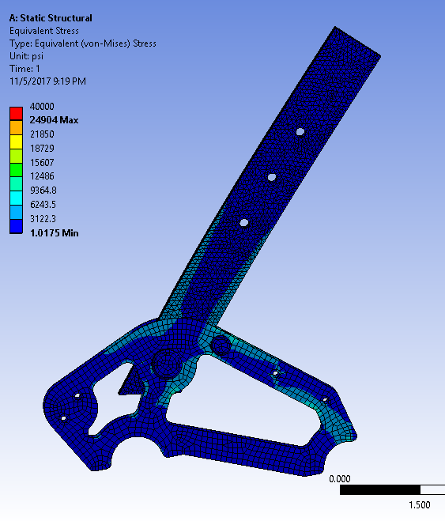

Background
Olin's Electric Motorsports club builds and competes with a formula SAE electric racecar each year. This year, as a part of the brakes a pedals team, I was tasekd with designing the accelerator pedal for the club's third racecar, the Mark Three. This new pedal is lighter than last years pedal, easier to manufacture, mroe ergonomic, and features more accurate sensors. The pedal was designed in Solidworks.
New Sensors
On last years car, the Mark Two, rotational potentiometers were used to measure the angluar dispalcement of the pedal in order to control the car. Because the resolution of the senors was so low, the car often jumped and skipped when accelerating to full speed. As such, this year, the sensor being used are linear potentiometers, which have a much higher resolution. While this allows for smoother and more consistent acceleration for the car, it meant having to completely redesign the geometry of the pedal to accomodate the new sensor
Design
The main pedal is made out of simple 1/8" aluminum box channel. While not the sleekest way to make a pedal, it is by far the simplest and durastically cuts down on manufacturing time. The bottom mounting plates will be made out of waterjet steel, and the top bracket sheets for the linear potentiometers will be made out of waterjet aluminum. Because the waterjet is relatively reliable and accurate, it also helps to cut down on manufacturing time for the pedal.
Analysis
In order to ensure that the pedal would be able to wistand the load from the driver's foot, several tests were conducted within the 3D analysis software, ANSYS Workbench. A liberal load (200 pounds) was applied to the end of the pedal in order to determine the stress and the strain within the assembly. Because of the analysis, I was able to get a rough idea for the factor of safety of the pedal, and know that it will not fail at the competition.
